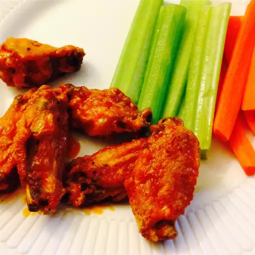

Buffalo Chicken Wings

Spicy Euphoria: Buffalo Chicken Wings
Embark on a flavor-packed adventure with this irresistible Buffalo Chicken Wings recipe. Crispy on the outside, tender on the inside, these wings are drenched in a spicy buffalo sauce that delivers the perfect balance of heat and tang. Whether you're hosting a game day party or simply craving a savory snack, these wings are a must-try. The secret lies in the bold seasoning, crispy texture, and the mouthwatering buffalo sauce that coats each wing to perfection. Dive into a plateful of these wings, and let the combination of spicy, savory goodness tantalize your taste buds. Get ready for a culinary experience that brings the bold flavors of Buffalo right to your table.
Ingredients
- 1 quart vegetable oil for deep frying
- 24 chicken wings, tips removed and wings cut in half at joint
- 4 tablespoons butter
- 1 tablespoon distilled white vinegar
- 5 tablespoons hot pepper sauce
- salt and pepper to taste
Steps
- Heat the oil in a large skillet or deep fryer to 375 degrees F (190 degrees C). Deep fry chicken wings in oil until done, about 10 minutes. Remove chicken from skillet or deep fryer and drain on paper towels.
- Melt the butter in a large skillet. Stir in the vinegar and hot pepper sauce. Season with salt and pepper to taste. Add cooked chicken to sauce and stir over low heat to coat. The longer the wings simmer in the sauce, the hotter they will be. Serve warm.